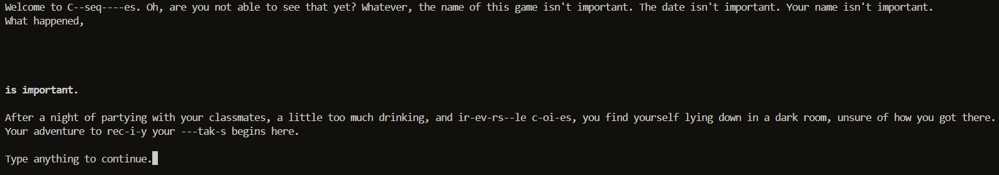
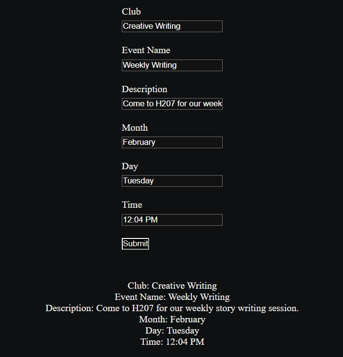
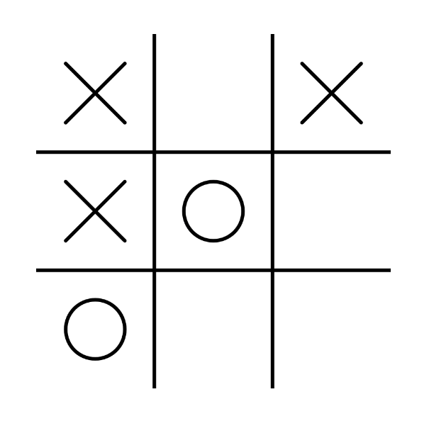

Hello, my name is Iain, although I prefer being called Lucas. This is my portfolio! I am currently a senior at Pasadena High School. I am interested in computer science, software development, and game development. My email is futurelucas123@gmail.com.
These are a few of my works:
A 2D platformer game where you jump across pits to reach the end of the level. There are stars to collect and enemies to avoid. This was built in GDScript using the Godot Engine.
 GitHub repositoryA text-based story game about a journey of self improvement. The user controls the main character by typing words into a terminal. This was built in Python.
Calender functionality for a website intended to be used by the clubs of Pasadena High School to post information about meetings. Input data into the boxes, and when you press submit it will be sent to an API and display on the page. This was built in HTML/CSS/Javascript, and uses a Sheetdb API.
A simple game of Tic Tac Toe against an AI. The AI is programmed to always make the best possible move in any given situation. This was built in HTML/CSS/Javascript.